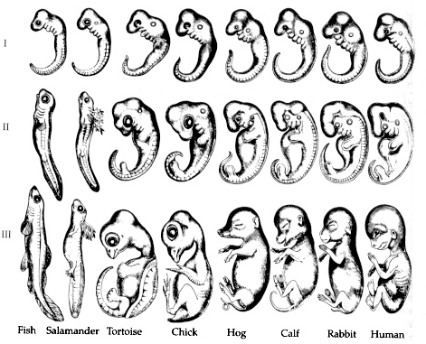
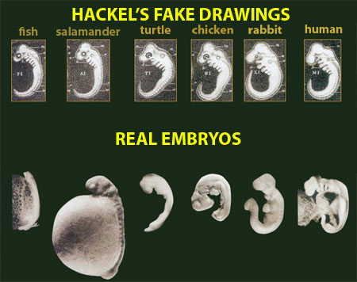
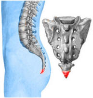
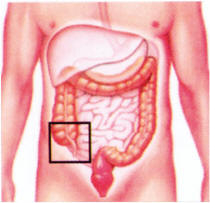
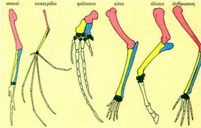

===========================================
Εξέλιξη ή Δημιουργία; [Μέρος 7ο]
◄ Πλαστογραφία Χαίκελ - Υπολειμματικά Όργανα - ►
- Ομόλογα Όργανα - Βιοχημική & Γενετική Ομοιότητα
===========================================
Ο Ερνστ Χαίκελ (Ernst Haeckel 1834 – 1919) ήταν διαπρεπής Γερμανός βιολόγος και καθηγητής ανατομίας και ένθερμος υποστηρικτής της θεωρίας του Δαρβίνου περί εξέλιξης των ειδών, αλλά και γενικότερα της υλιστικής θεώρησης του κόσμου.
Το θέμα για το οποίο είναι περισσότερο γνωστός ο Χαίκελ, είναι ο «Θεμελιώδης Βιογενετικός Νόμος» ή «Νόμος του Χαίκελ» ή «Νόμος της Ανακεφαλαίωσης», σύμφωνα με τον οποίο «η οντογένεση ανακεφαλαιώνει την φυλογένεση» (“ontogeny recapitulates phylogeny”). Αυτό σημαίνει ότι ένα έμβρυο καθώς αναπτύσσεται κατά την περίοδο της κύησης (οντογένεση) περνάει περιληπτικά από όλα τα στάδια της εξέλιξης του είδους του (φυλογένεση).
Για παράδειγμα, ένα ανθρώπινο έμβρυο ξεκινάει τη ζωή του από το στάδιο του μονοκύτταρου οργανισμού (γονιμοποιημένο ωάριο) όπως δηλαδή υποτίθεται ότι ξεκίνησε η ζωή πάνω στη Γη, όταν ένα κύτταρο δημιουργήθηκε τυχαία. Εν συνεχεία, το έμβρυο φέρει κάποιες ρυτιδώσεις σαν βράγχια και περνάει από το «στάδιο του ψαριού», αφού άλλωστε υποτίθεται ότι οι όλοι οι οργανισμοί εξελίχθηκαν από προγόνους που ζούσαν στο νερό. Επίσης το έμβρυο εμφανίζει και μια ουρά οπότε θεωρείται ότι περνάει από τα εξελικτικά στάδια κατά τα οποία οι πρόγονοι του ανθρώπου διέθεταν ουρά. Αργότερα, όταν έχει αναπτυχθεί περισσότερο, έχει μορφή που θυμίζει πίθηκο και στο τελικό στάδιο παίρνει τη μορφή του ανθρώπου.
Για να στηρίξει αυτή τη θεωρία του ο Χαίκελ δημοσίευσε εικόνες εμβρύων ψαριού, σαλαμάνδρας, χελώνας, κοτόπουλου, χοίρου, αγελάδας, κουνελιού και ανθρώπου τις οποίες παρέθεσε συγκριτικά σε τρία στάδια της ανάπτυξής τους. Στις απεικονίσεις αυτές φαινόταν όχι μόνο ότι το κάθε έμβρυο ζει περιληπτικά την εξέλιξη του είδους του, αλλά και ότι τα έμβρυα όλων αυτών των ζώων στα πρώιμα στάδια ανάπτυξής τους εμφανίζουν μεγάλες ομοιότητες, γεγονός το οποίο σύμφωνα με το Χαίκελ μαρτυρούσε την ύπαρξη ενός κοινού εξελικτικού προγόνου από τον οποίο προήλθαν όλα τα είδη.

Πολύ γρήγορα όμως αποκαλύφθηκε ότι ο Βιογενετικός Νόμος του Χαίκελ ή Νόμος της Ανακεφαλαίωσης ήταν μία απάτη. Δύο επιστήμονες σύγχρονοι του Χαίκελ, ο Ρότιμέγερ (Rütimeyer) και ο Χις (His), δημοσίευσαν επιστημονικές πραγματείες με τις οποίες αποκάλυπταν ότι οι εικόνες που είχε δημοσιεύσει ο Χαίκελ δεν αναπαριστούσαν τις πραγματικές μορφές των εμβρύων αλλά επρόκειτο για παραποιήσεις και αυθαίρετες απεικονίσεις στις οποίες παρέλειπε βασικές μορφολογικές διαφορές των εμβρύων και υπερτόνιζε επιλεκτικά ορισμένες ομοιότητες. Άλλωστε ήταν γνωστό ότι ο Χαίκελ είχε ταλέντο και στη ζωγραφική.
Στα επόμενα χρόνια, και ένα πλήθος άλλων επιστημόνων εξέθεσαν τις νοθείες και τις πλαστογραφίες του Χαίκελ, ώστε ο ίδιος αναγκάστηκε να απαντήσει με ολοσέλιδο άρθρο στη γερμανική εφημερίδα "Volks – Zeitung" της 29/12/1908, όπου ομολογεί ότι έκανε πλαστογραφίες και παραποιήσεις των εικόνων, αλλά, όπως λέει, αλλοίωσε μόνο το 6 με 8%, και ότι το ίδιο κάνουν και εκατοντάδες άλλων επιστημόνων! Και αντί επιστημονικής απάντησης, επιτίθεται με ύβρεις εναντίον εκείνων που αποκάλυψαν τις απάτες του.

Εκτός όμως από το γεγονός ότι οι απεικονίσεις του Χαίκελ ήταν πλαστές, ο Βιογενετικός Νόμος καταρρέει και μέσα από τις σύγχρονες επιστημονικές γνώσεις για κάθε στάδιο της ανάπτυξης του εμβρύου:
- Ένα γονιμοποιημένο ωάριο είναι εντελώς διαφορετικό από έναν μονοκύτταρο οργανισμό τύπου αμοιβάδας.
- Οι πτυχώσεις του εμβρύου δεν έχουν καμία σχέση με βράγχια αφού δεν έχουν σχισμές ούτε ανοίγματα, όπως έχουν τα βράγχια του ψαριού ώστε να αναπνέει μέσα στο νερό. Αντιθέτως, πρόκειται για μικρές οστοειδείς προεξοχές από τις οποίες θα σχηματιστούν διάφορα όργανα (σιαγόνες, λάρυγγας κ.ά.). Άλλωστε το έμβρυο δεν αναπνέει χρησιμοποιώντας το αμνιακό υγρό ώστε να χρειάζεται βράγχια όπως τα ψάρια.
- Η «ουρά» του εμβρύου είναι απλώς ένα προεξέχον τμήμα το οποίο αφομοιώνεται καθώς το σώμα του εμβρύου αναπτύσσεται. Δεν έχει καμία ομοιότητα με το σχηματισμό και τη λειτουργία της ουράς ενός ζώου.
- Οι πραγματικές απεικονίσεις δείχνουν ότι σε κανένα στάδιο της ανάπτυξής του το ανθρώπινο έμβρυο δεν μοιάζει με «πιθηκάκι».
Ιδιαίτερα καθοριστικές άλλωστε είναι και οι συνέπειες αποδοχής μιας τέτοιας θεωρίας. Αφενός η εξομοίωση του ανθρώπου με τα ζώα επιχειρεί να εδραιώσει αθεϊστικές αντιλήψεις και αφετέρου αν υποτεθεί ότι ένα έμβρυο κατά την κυοφορία δεν είναι εξαρχής άνθρωπος αλλά περνάει από τη φάση του ψαριού του πιθήκου κλπ., τότε δεν υπάρχει καμιά αναστολή στο να γίνει μία έκτρωση, δηλαδή ένας φόνος μιας ανθρώπινης ζωής!
Η θεωρία του Χαίκελ λοιπόν, κατέρρευσε στις αρχές του 20ού αιώνα (ήδη το 1910 εθεωρείτο κάτι το ξεπερασμένο), ενώ η πλήρης απόδειξη της εκτεταμένης παραποίησης των δεδομένων ήρθε χάρη στις διεξοδικές εργασίες του βρετανού εξελικτικού βιολόγου Michael Richardson τη δεκαετία του 1990. Αυτό όμως που καθιστά την περίπτωση του Χαίκελ μοναδική στην ιστορία της επιστήμης, είναι το γεγονός ότι η ψευδής αυτή θεωρία συμπεριλήφθηκε σε διδακτικά εγχειρίδια στα οποία μπορεί κανείς μέχρι και σήμερα να βρει τμήματά της!
Υπολειμματικά Όργανα (Vegistial Organs)
Στο σημείο αυτό θα μπορούσε κάποιος να αναρωτηθεί σχετικά με την ύπαρξη των λεγόμενων «υπολειμματικών οργάνων». Πρόκειται για δομές και όργανα τα οποία απαντώνται σε διάφορα ζώα αλλά και στον άνθρωπο, και τα οποία δίνουν την εντύπωση ότι είναι υπολείμματα οργάνων που υστέρησαν κατά τη διάπλαση και δεν φαίνεται να εκτελούν κάποια λειτουργία στο σώμα. Οι υποστηρικτές της θεωρίας της εξέλιξης πιστεύουν ότι είναι «απομεινάρια» οργάνων που σε προγονικές εξελικτικές μορφές ήταν λειτουργικά. Χαρακτηριστικό παράδειγμα είναι ο κόκκυγας, ένα οστό στη βάση της ανθρώπινης σπονδυλικής στήλης το οποίο δίνει την εντύπωση ότι εκεί υπήρχε κάποτε μια ουρά που κατά την εξέλιξη ατρόφησε και εξαφανίστηκε αφήνοντας όμως ένα απομεινάρι της. Επίσης, η σκωληκοειδής απόφυση φαίνεται να είναι μια άχρηστη προεξοχή του εντέρου.


Όμως, η αντίληψη ότι τα «υπολειμματικά όργανα» υποστηρίζουν τη θεωρία της εξέλιξης καταρρίπτεται από τα εξής δεδομένα:
- Ολοένα και περισσότερο ανακαλύπτεται ότι σε διάφορους οργανισμούς πολλά όργανα που θεωρούνταν ως «υπολειμματικά», εκτελούν τελικά τουλάχιστον μία χρήσιμη για το σώμα λειτουργία. Για παράδειγμα, η σκωληκοειδής απόφυση είναι μέρος του λεμφικού συστήματος και βοηθάει στην αφαίρεση ακαθαρσιών από τα υγρά του σώματος. Επίσης, ο κόκκυγας αποτελεί σημείο προσαρμογής των μυών που επιτρέπουν την όρθια στάση, τη βαδιση και άλλες λειτουργίες στήριξης (όλες δε οι περιπτώσεις ανθρώπων που γεννήθηκαν με κάποια «ουρά» βρέθηκε ότι οφείλονται είτε σε τερατογένεση είτε σε κάποιο είδος δισχιδούς ράχης). Γενικότερα, το πλήθος των υπολειμματικών οργάνων στον άνθρωπο ελαττώθηκε από 180 (που είχαν επισημανθεί ως το έτος 1890) σε 0 το έτος 1999!
- Απώλεια μιας ολόκληρης δομής ή έστω της λειτουργίας μιας δομής, σημαίνει απώλεια γενετικής πληροφορίας από τα γονίδια. Ένα τέτοιο συμβάν όμως είναι αντίθετο με το μηχανισμό που υποτίθεται ότι προχωράει η εξέλιξη, σύμφωνα με τον οποίο με τυχαίο τρόπο (μέσω μεταλλάξεων) γίνεται προσθήκη γενετικής πληροφορίας που οδηγεί στην εμφάνιση πολυπλοκότερων οργανισμών.
Ομόλογα Όργανα (Homologue Organs)
Ένα παρεμφερές θέμα είναι το ζήτημα των «ομολόγων οργάνων», δηλαδή οργάνων τα οποία στα διάφορα είδη οργανισμών εμφανίζουν μεγάλες ομοιότητες στη δομή και τη μορφολογία τους παρόλο που μπορεί να εκτελούν διαφορετικές λειτουργίες. Ένα χαρακτηριστικό παράδειγμα ομoλόγων οργάνων είναι τα πρόσθια άκρα διαφόρων ζώων τα οποία μεταξύ τους αλλά και σε σχέση με τα άνω άκρα του ανθρώπου διαθέτουν την ίδια βασική σειρά οστών: βραχίονας, κερκίδα και ωλένη, καρπιαία οστά και σε μερικές περιπτώσεις μετακάρπια οστά και φάλαγγες δακτύλων.

Σύμφωνα με τους υποστηρικτές της θεωρίας της Εξέλιξης, τέτοιες ομοιότητες στη δομή και τη μορφολογία μαρτυρούν την ύπαρξη ενός κοινού πρόγονου από τον οποίο εξελίχθηκαν τα διάφορα είδη στα οποία υπάρχουν σήμερα ομόλογα όργανα. Μία τέτοια θέση όμως είναι εντελώς αυθαίρετη διότι δεν βασίζεται σε αποδείξεις αλλά αποτελεί απλώς μια άποψη. Θα πρέπει λοιπόν να θεωρείται ως ισότιμη και η άποψη ότι τα ομόλογα όργανα δεν αποτελούν σημάδια εξέλιξης αλλά δημιουργίας. Διότι είναι απόλυτα λογικό ένας κοινός δημιουργικός Νους να χρησιμοποίησε το ίδιο βασικό σχέδιο για να κατασκευάσει παρόμοιες δομές στους οργανισμούς. Άλλωστε το γεγονός ότι ένα ΙΧ αυτοκίνητο και ένα φορτηγό έχουν «ομόλογα όργανα» (τροχούς, τιμόνι, κινητήρα κλπ.) οφείλεται στο ίδιο βασικό σχέδιο που χρησιμοποιείται για όλα τα οχήματα και όχι σε κάποιου είδους εξέλιξη η οποία συνέβη στο ΙΧ αυτοκίνητο και μάλιστα εντελώς τυχαία.
Έτσι λοιπόν, η άποψη ότι τα ομόλογα όργανα υποστηρίζουν την εξέλιξη παραπέμπει σε εποχές επιστημονικού σκοταδισμού όπου μια απλή παρατήρηση έσπευδε να χαρακτηριστεί ως αδιαμφισβήτητο επιστημονικό πόρισμα χωρίς περεταίρω διερεύνηση (π.χ. το σάπιο κρέας γεννά μύγες – βλ. «Αβιογένεση»). Από την άλλη μεριά τα σύγχρονα δεδομένα της Βιολογίας αναδεικνύουν την άποψη της Δημιουργίας ως καλύτερη εξήγηση για την ύπαρξη ομολόγων οργάνων:
- Υπάρχουν όργανα και δομές που χαρακτηρίζονται ως «ομόλογα» αλλά σχηματίζονται κατά την κυοφορία από διαφορετικές ομάδες εμβρυϊκών κυττάρων στα διάφορα είδη οργανισμών. Για παράδειγμα, τα πρόσθια άκρα της σαύρας και του ανθρώπου σχηματίζονται από διαφορετικά σημεία του εμβρυϊκού κορμού.
- Όργανα τα οποία χαρακτηρίζονται ως «ομόλογα» δεν προκύπτουν πάντοτε από παραπλήσιες αλληλουχίες γενετικού κώδικα, και αντίστροφα παραπλήσιες αλληλουχίες γενετικού κώδικα δεν παράγουν ομόλογα όργανα.
- Είναι λογικό και αναμενόμενο για όργανα τα οποία καλούνται να ανταποκριθούν σε παρόμοιες λειτουργικές απαιτήσεις να προτιμώνται κατασκευαστικά σχέδια που έχουν κοινή βάση, καθώς οποιοσδήποτε εναλλακτικός σχεδιασμός δεν θα ήταν κατάλληλος ή τόσο αποδοτικός. Για παράδειγμα, όλων των ειδών οι τροχοί είναι κυκλικοί λόγω της κοινής απαίτησης για κύλιση, και για το σκοπό αυτό ο καταλληλότερος σχεδιασμός είναι το κυκλικό σχήμα.
Βιοχημική Ομοιότητα
Εκτός από τις μορφολογικές ομοιότητες των ομολόγων οργάνων υπάρχουν και ομοιότητες στις βιοχημικές λειτουργίες των κυττάρων: όλοι οι ζωντανοί οργανισμοί χρησιμοποιούν 20 συγκεκριμένα αμινοξέα, έχουν το DNA ως φορέα της γενετικής πληροφορίας, έχουν παρόμοιους μεταβολικούς μηχανισμούς κ.ά.. Αυτές όμως οι ομοιότητες, όσο μπορούν να θεωρηθούν ενδείξεις κοινής εξελικτικής καταγωγής, άλλο τόσο μπορούν να θεωρηθούν και ως ενδείξεις ύπαρξης ενός Δημιουργού ο Οποίος χρησιμοποίησε το ίδιο βασικό σχέδιο για να κατασκευάσει ομόλογες βιοχημικές διεργασίες στους ζωντανούς οργανισμούς.
Είναι απορίας άξιο γιατί οι υποστηρικτές της θεωρίας της εξέλιξης θα περίμεναν να δουν τα διάφορα είδη οργανισμών κατασκευασμένα με εντελώς διαφορετική βιοχημεία για να σκεφθούν την πιθανότητα ύπαρξης ενός Δημιουργού. Κάτι τέτοιο αν συνέβαινε θα ήταν παράλογο διότι:
- Ο Δημιουργός θα είχε κατασκευάσει οργανισμούς που δεν θα μπορούσαν να τρέφονται ο ενας από τον άλλο αφού δεν έχουν βιοχημική ομοιότητα. Η μόνη οδός επιβίωσης θα ήταν ο κανιβαλισμός λόγω έλλειψης βιοχημικής συμβατότητας.
- Θα προέκυπτε το συμπέρασμα ότι δεν υπάρχει ένας Δημιουργός αλλά πολλοί δημιουργοί που ο καθένας ακολούθησε ένα διαφορετικό σχέδιο.
Γενετική Ομοιότητα
Τέλος, ένα ακόμη επιχείρημα υπέρ της θεωρίας της εξέλιξης βασίζεται στη γενετική ομοιότητα, με δημοφιλέστερο παράδειγμα το γεγονός ότι το DNA του ανθρώπου είναι όμοιο με το DNA διαφόρων ειδών πιθήκων σε ποσοστό 96% έως 98% ή και παραπάνω. Καταρχήν το ποσοστό γενετικής ομοιότητας που προκύπτει σε κάθε έρευνα ποικίλει διότι εξαρτάται από τις επιμέρους περιοχές του DNA που συγκρίνονται, την ποσότητα του DNA που χρησιμοποιείται και τις υπολογιστικές τεχνικές που εφαρμόζονται. Έτσι, όσον αφορά την ομοιότητα πιθήκου – ανθρώπου, διαφορετικές έρευνες σε διαφορετικά τμήματα και ποσότητες DNA παρουσιάζουν ποσοστά ομοιότητας που κυμαίνονται μεταξύ 87% και 96%.
Ένα ενδεικτικό παράδειγμα του πόσο υποκειμενικά είναι αυτά τα ποσοστά, είναι το γεγονός ότι το DNA του χιμπατζή είναι 12% μεγαλύτερο από το ανθρώπινο, κι επομένως ακόμη κι αν ολόκληρο το ανθρώπινο DNA ήταν ολόιδιο με το αντίστοιχο του χιμπατζή, το μέγιστο ποσοστό ομοιότητας που θα προέκυπτε θα ήταν 88%! (αφού το υπόλοιπο 12% δεν υπάρχει στον άνθρωπο).
Άλλωστε η γενετική ομοιότητα δεν φαίνεται να οδηγεί σε ξεκάθαρα εξελικτικά συμπεράσματα. Για παράδειγμα, ο χιμπατζής θεωρείται ότι έχει τη μεγαλύτερη γενετική ομοιότητα με τον άνθρωπο (εκτιμήσεις αναφέρουν έως και 99%). Εν τούτοις, ο γίββωνας με μικρότερη γενετική ομοιότητα έχει περισσότερη μορφολογική ομοιότητα με τον άνθρωπο όσον αφορά τη δίποδη βάδιση. Αλλά και ο γορίλας, επίσης με μικρότερη γενετική ομοιότητα ως προς τον άνθρωπο, έχει επιμέρους γονίδια τα οποία μοιάζουν περισσότερο με τα ανθρώπινα από τα αντίστοιχα του χιμπατζή.
Επιπλέον, πρόσφατα ανακαλύφθηκε ότι μεγαλύτερη είναι η γενετική ομοιότητα του αλόγου με τη νυχτερίδα παρά του αλόγου με την αγελάδα. Με βάση αυτό, προκύπτει ότι το άλογο και η νυχτερίδα έχουν κοντινότερο κοινό εξελικτικό πρόγονο απ ’ ότι το άλογο με την αγελάδα! Με βάση όμως τη μορφολογική ομοιότητα προκύπτει το αντίθετο συμπέρασμα! Άρα σε ποιό από τα δύο κριτήρια θα πρέπει να βασιστούμε σχετικά με τη θεωρία της εξέλιξης; Στη μορφολογική ομοιότητα ή στη γενετική ομοιότητα; Κι αν πράγματι το ένα είδος εξελίχθηκε από το άλλο και υπάρχουν κοινοί πρόγονοι, πώς είναι δυνατόν να υπάρχουν περιπτώσεις που τα δύο αυτά κριτήρια να αντιφάσκουν μεταξύ τους;
Επίσης υπάρχουν ζώα τα οποία χωρίς να έχουν τόσο μεγάλη γενετική ομοιότητα με τον άνθρωπο όσο ένας πίθηκος, εν τούτοις εμφανίζουν σε ορισμένες περιπτώσεις ικανότητες και νοημοσύνη πλησιέστερες στις ανθρώπινες (για περισσότερες λεπτομέρειες δείτε το άρθρο “Decoding the dogma of DNA similarity” στη δεξιά στήλη).
Μάλιστα, επειδή το ανθρώπινο DNA αποτελείται από περίπου 3 δισεκατομμύρια «χημικά γράμματα», ακόμη κι αν η ομοιότητα με το DNA ενός πιθήκου άγγιζε το 99%, τότε η διαφορά του 1% θα αντιστοιχούσε σε περίπου 30 εκατομμύρια «χημικά γράμματα». Είναι όμως αδύνατον μια τόσο εκτεταμένη διαφοροποίηση στο γενετικό υλικό να συνέβη εξελικτικά μέσω μεταλλάξεων (βλ. σχετικό άρθρο «Νεοδαρβινισμός: Οι Μεταλλάξεις Πηγή Νέων Ειδών;»).
Τέλος, ομοιότητα στον κώδικα του DNA δεν σημαίνει απαραίτητα και ομοιότητα στην πληροφορία την οποία φέρει. Για παράδειγμα, οι προτάσεις:
«Υπάρχουν πολλοί επιστήμονες σήμερα που αμφισβητούν το εξελικτικό μοντέλο και τις αθεϊστικές φιλοσοφικές του συνέπειες»
«Δεν υπάρχουν πολλοί επιστήμονες σήμερα που αμφισβητούν το εξελικτικό μοντέλο και τις αθεϊστικές φιλοσοφικές του συνέπειες»είναι όμοιες σχεδόν κατά 97% αλλά έχουν περίπου αντίθετη σημασία!
Άρα από τα παραπάνω γίνεται φανερό ότι η προβαλλόμενη γενετική ομοιότητα του πιθήκου με τον άνθρωπο αποσκοπεί αποκλειστικά στη δημιουργία ψευδών εντυπώσεων.
Τα νεότερα επιστημονικά δεδομένα λοιπόν έρχονται να αποδομήσουν τη θεωρία της εξέλιξης και να οδηγήσουν αβίαστα στο συμπέρασμα της ύπαρξης Θεού – Δημιουργού.
***
Τα περιεχόμενα του άρθρου αποτελούν περίληψη της εκπομπής "Χριστιανισμόςκαι Επιστήμη" της 29/01/2009. Το σχετικό υλικό παρατίθεται στη δεξιά στήλη.
Ακούστε τη σχετική εκπομπή
1ο ημίωρο 2ο ημίωρο 3ο ημίωρο 4ο ημίωρο Επιστροφή στην Κατηγορία: Εξέλιξη ή Δημιουργία; Σχετικό υλικό*
- Βιογραφία Ερνστ Χαίκελ
[Από την Ευώνυμος Οικολογική Βιβλιοθήκη] - Η Εξέλιξη ως Έργο Τέχνης
[Από την εφημερίδα "Το Βήμα"] - Η Αποκάλυψη της Απάτης
του Χαίκελ
[Βασισμένο σε αποσπάσματα
του βιβλίου "Από τον Πίθηκο;"
του Απ. Χ. Φράγκου, Εκδόσεις Αδελφότης «Σταυρός» Αθήνα 1988] - Ο Μύθος των Εμβρυϊκών Ομοιοτήτων
[Βασισμένο σε αποσπάσματα
του βιβλίου "Το Μεγάλο Ψέμα"
του Dr. W. A. Criswell, Ελεύθερες Εκδόσεις, Αθήνα 1985] - Fraud Rediscovered [Από το site Creation Ministries]
- Απάτη!
[Από την εφημερίδα "Το Βήμα"] - Haeckel's Bogus

Embryo Drawings
[Βίντεο του Discovery Institute] - What do Modern Textbooks Really Say about Haeckel's Embryos? [Από το Discovery Institute]
- Βιολογία Γενικής Παιδείας
Γ' Λυκείου Έκδοση 2010
Σελ. 138-139
[Απόσπασμα από το σχολικό βιβλίο όπου διδάσκονται στοιχεία της πλαστής θεωρίας του Χαίκελ καθώς και τα αναπόδεικτα στοιχεία περί ομολόγων και υπολειμματικών οργάνων] - Έκανε λάθος ο Δαρβίνος;
[Από το site cbc.gr - βλ. σελ. 4, 5] - 'Vegistial' Organs:
What do they prove? [Από το site Creation Ministries] - Do any Vegistial Structures
exist in humans?
[Από το site Creation Ministries] - Vestigial Organs:
Questions and Answers
[Από το site Creation Ministries] - Σκωληκοειδής Απόφυση [Από την ελληνική wikipedia]
- Coccyx [Από την αγγλική wikipedia]
- Human Baby born with Tail
is no Evidence of Evolution
[Από το site creationtips.com] - Does Homology provide Evidence of Evolutionary Naturalism?
[Από το site Creation Ministries] - Απόψεις Επιστημόνων για τις Ομοιότητες μεταξύ των Ειδών
[Απόσπασμα από το βιβλίο
"Από τον Πίθηκο;" του Απ. Χ. Φράγκου, Εκδόσεις Αδελφότης «Σταυρός» Αθήνα 1988] - Does the DNA Similarity
between Chimps and Humans prove a Common Ancestry?
[Από το ChristianAnswers.net] - Decoding the Dogma
of DNA Similarity
[Από το site Creation Ministries] - Saddle up the Horse,
it’s off to the Bat Cave
[Από το site Creation Ministries] - Διαβάστηκε το DNA του Γορίλα
[Από την εφημερίδα Καθημερινή] - Greater than 98% Chimp - Human DNA Similarity?
Not any more
[Από το site AnswersInGenesis] - Human/chimp DNA similarity continues to decrease:
counting indels
[Από το site AnswersInGenesis] - The Case for a Creator [Σελ. 55-66
Βιβλίο του Lee Strobel,
Zondervan pub., 2004] - Από τον πίθηκο;
[Βιβλίο του Απ. Χ. Φράγκου
Εκδόσεις Αδελφότης «Σταυρός»
Αθήνα 1988]
- - -
* Θα θέλαμε να διευκρινίσουμε ότιη ιστοσελίδα μας δεν εκπροσωπεί
ούτε σχετίζεται με το περιεχόμενο άλλων ιστοσελίδων προς τις οποίες παραθέτουμε συνδέσμους (links).